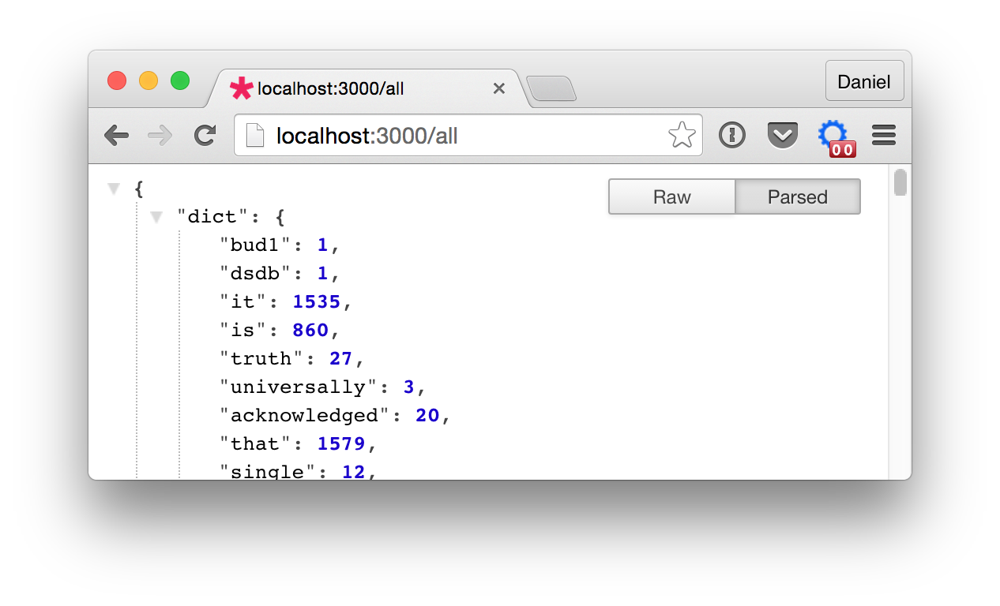

about
syllabus
All example source code
Node.js is a JavaScript framework for writing server-side applications. In its simplest form it allows you to trigger small JavaScript programs from the command line without any browser involved. For example, assuming node is installed if you write a JavaScript program in a file called hello.js:
console.log('Node works!');And then execute it from terminal with node hello.js you’ll see:
$ node hello.js
Node works!Node Package Manager (npm) comes with node and allows you to install and work with node packages. Node packages are like libraries or add-ons and you can work with them in the same way that you might use a Processing or JavaScript library.
Though it’s not required, it’s generally good practice to include a package.json file with each node project. This file stores metadata about your project like author, license, as well as any dependencies on other node packages. You can manually create the file, but the command npm init will prompt you with a series of questions.
$ npm initAfter answering the prompts you’ll see something like the following in a new package.json file:
{
"name": "project-name",
"version": "1.0.0",
"description": "This is a test project.",
"main": "server.js",
"scripts": {
"test": "echo \"Error: no test specified\" && exit 1"
},
"author": "Daniel Shiffman",
"license": "ISC"
}Here is a link to documentation of package.json contents.
Now let’s say you are creating a node application where you want to use the Twit package. Twit is a package for connecting to the Twitter API and I’ll user it in examples you’ll find later on this page. To install a package, simply type npm install packagename. You can also add flags which can modify how a package is installed. One that I’ll use here is --save. This flag saves a reference to the package to package.json which can come in handy later when deploying your application.
$ npm install Twit --save
Express is a popular, simple web framework for node. It includes hooks for the usual things you want to do with a web server, like hosting files and getting query input from a user. Although Express is not necessary for the ultimate goal of writing twitter bots (no need to be a web server), I’m going to take a little time on this page to walk through some basics related to other kinds of server-side functionality you might need for projects in this course.
First thing you need to do is install express.
$ npm install express --save
Once it’s installed, the way to access code from a node package is through the require() function.
var express = require('express');With a reference to express, you can then create an express “app”:
var app = express();The app is now a variable that holds an express instance, and allows you to implement functionality on that instance. For example, you might listen to conenctions on a certain port. The callback is triggered when the
var server = app.listen(3000);You can also serve static files. For example, if you have a p5.js sketch (with an index.html file) and you place it in a folder called public, you can say:
app.use(express.static('public'));Now anytime you enter the url to your server (if you are running it on your machine, this will be http://localhost:3000), the contents of the public folder will be hosted. (By the way, this is exactly what the p5.js editor is doing when you hit the run button.)
Beyond hosting static files, one of the most useful things you can do with server-side programming is execute different blocks of code based on the users’ “route”. A route is a path on the server like http://yourserver.com/path/to/route. With static files, this is just a folder structure, but new possibilities open up when you programatically handle a route. For example, the following code specifies a function to call whenever a user goes to http://server.com/someroute.
app.get('/someroute', sayHello);With the above code, you then need to do define the sayHello() function (which of course could have been named anything you want.)
function sayHello(request, response) {
response.send("Hello!");
}Notice how the callback sayHello() is defined with two parameters: request and response. These variables refer to the HTTP request-response protocol. The user made a request and the server provides a response.
So in the above example, you can see that the server is just sending back the work “Hello!” in the response. If you passed a variable full of HTML back through send() you’d be serving up a webpage (generated programmtically!).
You can also look at the data associated with the user’s request. For example, if the request was made with a query string like http://server.com/someroute?name=Olympia, the value “Olympia” can be accessed via the query property of request.
function sayHello(request, response) {
var name = request.query.name;
response.send("Hello " + name + "!");
}REST (Representational_state_transfer) is a common style of web architecture that is used by many APIs. For example, as you may have seeen in previous examples, a request to the Wordnik API looks something like: http://api.wordnik.com:80/v4/word.json/unicorn/definitions. Note how this is different than using a url query string like http://someapi.com/?word=unicorn. Instead of a query string, the API pulls out commands (“definitions”) and parameters (“unicorn”) from the route itself. This translates to “Please send the definitons for the word unicorn.”
You can implement this style in node using app.get() as above. The difference is the following.
params property of request rather than query.app.get('/hello/:name/:age', sayHello);A valid url for the above might then be: http://server.com/hello/Elias/7. You could handle the above saying:
function sayHello(request, response) {
var name = request.params.name;
var age = request.params.age;
response.send("Hello " + name + ", " + age + ' years old!');
}Let’s say you want to build a node app then reads in lots of text, analyzes the text, and provides the analysis to the end user. (Files can be read using the node file system module.) Then when the user requests a route, say “all”:
// Route for sending all the concordance data
app.get('/all', showAll);The response can be a JavaScript object itself!
function showAll(req, res) {
// If you have an object called wordcounts with all the data
res.send(wordcounts);
}The magic of using express is that the send() function will automatically turn the JavaScript object passed into JSON! The what the end user sees is:

Now, a p5 sketch that is stored in, say, the statically hosted “public” folder can query this newly made API!
function setup() {
noCanvas();
loadJSON('/all', gotData);
}
function gotData(data) {
var words = data.keys;
for (var i = 0; i < words.length; i++) {
var word = words[i];
var count = data.dict[word];
// Do something with the data!
}
}Another scenario server-side programming can be useful for is scraping HTML from another site. You can’t make an HTTP request to another server from client-side JavaScript, but you can ask your own server to make this request for you! To do this, you can use the http node package.
var request = require('request');You could specify a route and get the url via a query string. For example http://server.com/load?url=http://someothersite.com.
// A router to load a URL
app.get('/load', loadURL);
// Callback
function loadURL(req, res) {
// Get the URL from the user
var url = req.query.url;
// Execute the HTTP Request
request(url, loaded);
// Callback for when the request is complete
function loaded(error, response, body) {
// Check for errors
if (!error && response.statusCode == 200) {
// The raw HTML is in body
res.send(body);
} else {
res.send('error');
}
}
}Note how there are nested callbacks in the code above. First loadURL() runs when the user requests the “load” route. Then the HTTP request is made with request(). When that request is finished the loaded() callback runs and sends back the body parameter, which is the raw HTML content itself.
Now this can be called directly from p5’s loadStrings() method!
function setup() {
loadStrings('load?url=http://something.com', gotData);
}